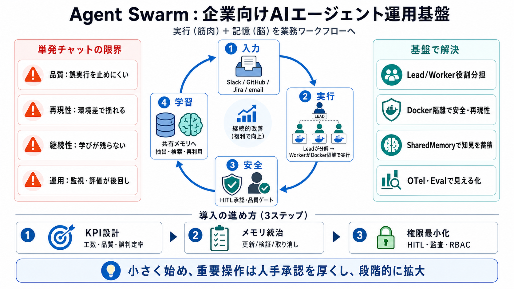

GitHub - desplega-ai/agent-swarm: Your Company Agentic Operating System · GitHub
> The patterns that compound. Five recipes show up in nearly every playbook — they're how the swarm stays reliable as it…

複数のAIエージェントが協調し、タスクを実行→学びをメモリに反映→次の仕事で改善する“仕組み”を提供します。
チャットで解決しても、組織の業務フローに組み込まれず、品質・安全・再現性の担保や学習の蓄積が難しくなります。
過去セッションの知見を“共有メモリ”に抽出し、次のタスクで改善に使うことで、知性を複利的に厚くすることを狙います。
Leadは計画・委譲を行い、WorkerはDockerの隔離環境で実行します。これにより安全性と再現性を高めます。
メモリは“ログ”ではなく、過去セッションの学びを抽出して検索可能な形で保持し、次の成果に効く形で統合します。
不可逆な工程は停止して人間の承認（HITL）を挟み、さらにLLM-as-judgeで品質ゲートを設ける設計が示されています。
Litmus Tests、Drain Loops、No-opなどのパターンで、信頼性と運用の安定性を高める考え方が前面に出ています。
Slack、GitHub、GitLab、メール、WhatsApp、Linear、Jira、HTTP APIなどからタスクを受け、成果をアウトプットできます。
LLM/ハーネスに依存しない設計と、スクリプトのAPI化、MCPツール・スキル拡張により統合を現実的にします。
evalハーネスでシナリオ×設定マトリクスを回し、OpenTelemetry（OTLP）でコスト等も含めて可観測性を確保します。
強みは統制（HITL/品質ゲート）・継続性（メモリ）・運用（可観測性/評価）を同時に押さえる点です。一方、README抜粋だけではガバナンスやセキュリティ境界が不明です。
Agent Swarmは“実行（筋肉）＋記憶（脳）”を業務ワークフローに組み込む基盤です。まずは評価と承認を設計してから拡大しましょう。
> The patterns that compound. Five recipes show up in nearly every playbook — they're how the swarm stays reliable as it…
The repo ships with a `CLAUDE.md` at the root — a focused guide that teaches Claude Code, Cursor, and other AI coding as…
DevSwarm logo and wordmark hive news July 16, 2026 DevSwarm Now Supports Multi-Repo Workspaces Learn More # Run Par…
As we look forward in 2026, we are introducing SNACK-AI. This architectural pattern is designed to power AI applications…
Agent Safety Financial Security Regulatory Compliance arXiv HF Code ACL 2026 #### Does Memory Need Graphs? A Unif…